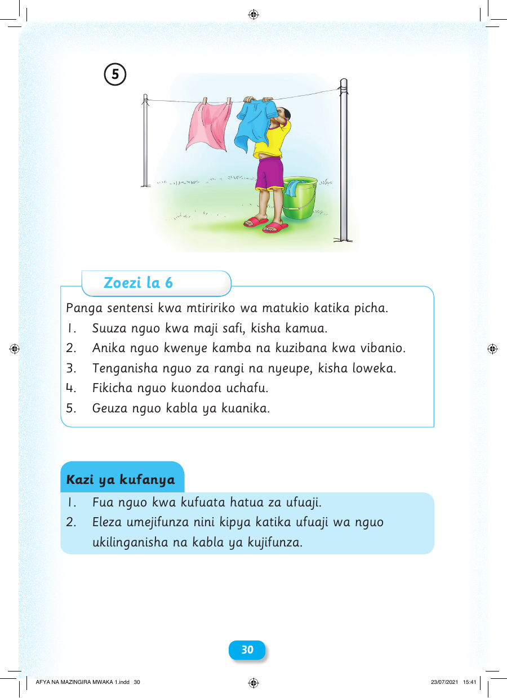

5 Zoezi la 6 Panga sentensi kwa mtiririko wa matukio katika picha. 1. Suuza nguo kwa maji safi, kisha kamua. 2. Anika nguo kwenye kamba na kuzibana kwa vibanio. 3. Tenganisha nguo za rangi na nyeupe, kisha loweka. 4. Fikicha nguo kuondoa uchafu. 5. Geuza nguo kabla ya kuanika. Kazi ya kufanya 1. Fua nguo kwa kufuata hatua za ufuaji. 2. Eleza umejifunza nini kipya katika ufuaji wa nguo ukilinganisha na kabla ya kujifunza. 30 AFYA NA MAZINGIRA MWAKA 1.indd 30 23/07/2021 15:41